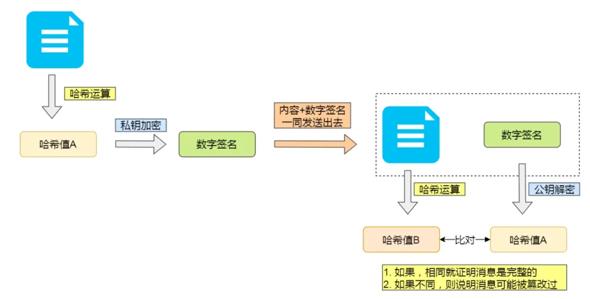
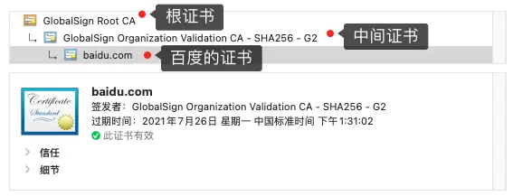
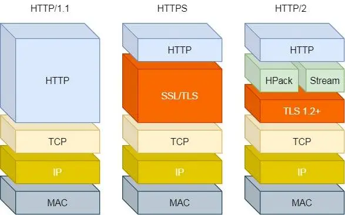
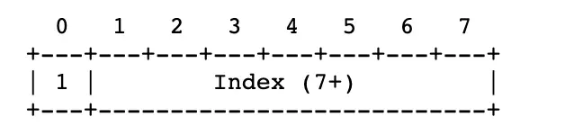

HTTP总体概述
一、HTTP基本概念
HTTP是什么
HTTP是超文本传输协议，也就是HyperTextTransferProtocol。
能否详细解释下超文本传输协议？
HTTP的名字【超文本传输协议】可以拆分成三个部分：
超文本
传输
协议
协议
生活中随时可见，比如租房协议等，生活中的协议和计算机的协议本质上是相同的，可以简单理解HTTP是一个用在计算机世界里面的协议，它使计算机能够理解语言确立了一种计算机之间交流通信规范（两个以上参与者）以及相关的各种控制和错误处理方式（行为约定和规范）。
协：两个以上的参与者，比如三方协议参与者有三个，你、公司、学校等。
议：对参与者的一种行为约定和规范，比如三方协议中规定的试用期和毁约金等。
传输
所谓拆书就是把一堆东西从A搬到B，或者从B搬到A。别轻视了这个简单的动作，至少包含两项重要的信息。
HTTP协议是一个双向协议。
我们在网络上冲浪的时候，浏览器是请求方A，百度网站是应答方B。双方约定用HTTP协议来通信，于是浏览器把请求数据发送给网站，网站再把一些数据返回给浏览器，最后由浏览器渲染屏幕，就可以看到图片和视频了。
数据虽然在A和B之间传输，DNA允许中间由中转或接力。
就好像第一排的同学线稿传递纸条给最后一排同学，那么传递的过程中就需要经过好多同学（中间人）这样的传输方式就是从[A <----> B]变成了[A <----> N <----> M <----> B]
而HTTP里，需要中间人遵从HTTP协议，只要不打扰基本的数据传输，就可以添加任意额外的东西。
针对传输，我们可以进一步理解了HTTP。
HTTP是一个在计算机世界里专门用来在两点之间拆书数据的约定和规范。
超文本
HTTP传输的内容就是超文本。
先理解下文本，文本是在互联网早期的时候只是简单的字符和文字，但现在文本的含义已经可以扩展到图片、视频、压缩包等，在HTTP眼里这些都算是文本。
在理解下超文本，超文本就是超越了普通文本的文本，是文字、图片、视频等混合体，最关键的有超连接，。能从一个超文本跳转到另外一个超文本。
HTML就是最常见的超文本，它本身只是纯文字文件，但内部用很多表情定义了图片、视频等连接，再经过浏览器解释，程序还给我们的就是一个文字、有画面的网页。
总结
HTTP是一个在计算机是咧专门在两点之间传输文字、图片、语音、视频等超文本的数据的约定和规范。
HTTP是从互联网服务传输超文本到本地浏览器的协议说法对吗？不对，HTTP也可以是服务器到服务器的传输。采用两点之间的描述会更准确。
HTTP常见的状态码
1xx：属于提示信息，是协议处理的一种中间状态，实际用的比较少。
2xx：表示成功处理了客户端的请求，也就是我们最愿意看到的状态码。
200 OK：一切正常，非HEAD请求，服务器返回的响应头都会有body数据。
204 No Content：常见的状态码，与200 OK基本一样，但响应头中没有body数据。
206 Partial Content：应用于HTTP分块下载或断电续传，表示响应返回的波杜数据并不是资源的全部，而是其中的一部分，也是服务器处理的成功的状态。
3xx：表示客户端请求的资源发生了变动，需要客户端用新的URL重新发送请求获取资源，也就是重定向。
301 Moved Permanently：表示永久重定向，说明请求的资源已经不存在了，需改用新的URL再次请求。
302 Found：表示临时重定向，说明请求的资源还在，但暂时需要另一个URL来访问。
301 302都会在响应头中使用Location字段指定后续跳转的URL，浏览器会自动重定向到新的URL。
304 Not Modified：不具有跳转的含义，表示资源未修改，重定向已经存在的缓冲文件，也称缓存重定向，也就是告诉客户端可以继续使用缓存资源，用于缓存控制。
4xx：表示客户端发送的报文有误，服务器无法处理，也就是错误码的含义。
400 Bad Request：表示客户端请求的报文有错误，但只是个笼统的错误。
403 Forbidden：表示服务器禁止访问资源，并不是客户端的请求出错。
404 Not Found：表示请求的资源在服务器上不存在或未找到，所以无法提供给客户端。
5xx：表示客户端请求报文正确，但是服务区处理时内部发生了错误，属于服务器端的错误。
500 Internel Server Error：与400类型，是个笼统通用的错误码，服务器发生了什么错误，我们并不知道。
501 Not Implemented：表示客户端请求的功能还不支持，类似”即将开业 敬请期待“的意思。
502 Bad Gateway：通常是服务器作为网关或代理时返回的错误码，表示服务器自身工作正常，访问后端服务器发生了错误。
503 Service Unabaliable：表示服务器当前很忙，暂时无法相应客户端，类似”网络服务正忙，请稍后重试“的意思。
HTTP常见的字段有哪些
Host字段
客户端发送请求时，用来指定服务器的域名。
Host：www.A.com
有了Host字段就可以即将请求发往同一台服务器上的不同网站。
Content-Length字段
服务器返回数据时，会有Content-Length字段，标明本次回应的数据长度。
Content-Length: 1000
表示本次服务器返回的数据长度是1000个字节，后面的字节属于下一个回应了。
HTTP是基于TCP传输的，使用了TCP传输协议，就会存在一个粘包问题，HTTP协议通过设置回车符、换行符作为HTTP Header的边界，通过Content-Length字段作为HTTP Body的边界，这两个方式都是为了解决粘包的问题。
Connection字段
Connection字段是最长用于客户端要求服务器使用「HTTP长链接」机制，以便其他请求复用。
HTTP长链接的特点是，只要任意一端没有明确提出断开连接，则保持TCP连接状态。

HTTP1.1版本的默认连接都是长连接，但为了兼容老版本的HTTP，需要指定Connection首部字段为Keep-Alive。
Connection: Keep-Alive
开启了HTTP Keep-Alive机制后，连接就不回中断，而是保持连接，大概客户端发送另一个请求时，会使用同一个链接，一直持续到客户端或服务区端提出断开连接。
注意：HTTP Keep-Alive不要与 TCP Keepalive搞混，两个不是一个东西。
HTTP的Keep-Alive：叫HTTP长连接，该功能是有应用程序实现的，使用同一个TCP连接来发送和接收多个HTTP请求/应答，减少了HTTP短连接带来的多次TCP连接建立和释放的开销。
TCP的Keepalive：叫做TCP保活机制，该功能是由内核实现的，当客户端与服务器端长达一定时间没有进行数据交互时，内核为了确保该链接是否还有效。就会发送探测报文，来检测对方是否还在线，然后决定是否要关闭该链接。
Content-Type字段
Content-Type字段用于服务器回应时，告诉客户端，本次数据是什么格式。
Content-Type: text/html; Charset=utf-8
上面的类型表明，发送的是网页，而且编码是UTF-8。
客户端请求的时候，可以使用Accept字段声明自己可以接受哪些数据格式。
Accept: */*
上面代码中，客户端声明自己可以接受任何格式的数据。
Content-Encoding字段
Content-Encoding字段说明的压缩方法，表示服务器返回的数据使用了什么压缩格式。
Content-Encoding: gzip
上面表示服务器返回的数据采用了gzip方式压缩，告知客户端需要此方式解压。
客户端在请求时，用Accept-Encoding字段说明自己可以接受哪些压缩方法。
Accept-Encoding: gzip, deflate
二、GET与POST
根据RFC规范，GET的语义是从服务器获取到指定的资源，这个资源可以是静态的文本、页面、图片视频等。GET请求的参数位置一般是写在URL中，URL规定智能支持ASCII，所以GET请求的参数位置一般是写在URL中，URL规定智能支持ASCII，所以GET请求的参数只允许ASCII字符，而且浏览器会对URL的长度有限制（HTTP协议本身对URL长度并没有做任何规定）。
比如，你打开我的文章，浏览器就会发送GET请求给服务器，服务器就会返回文章的所有文字和资源。
根据RFC规范，POST的寓意是根据请求负荷（报文body）对指定的资源做出处理。具体的处理方式被视为资源类型而不同。POST请求携带数据的位置一般是写在报文body中，body中的数据可以是任意格式的数据，只要客户端与服务端协商好即可，而且浏览器不会对body大小做限制。
GET和POST都是安全和幂等
说明下安全和幂等的概念：
在HTTP协议里，所谓的安全是指请求方法不会被破坏服务器上的资源。
幂等：多次执行相同的操作，结果都是相同的。
如果从RFC规范定义的语义来看：
GET方法是安全且幂等的，因为它是只读操作，无论操作多少次，服务器上的数据是安全的，切每次的结果都是相同的。所以，可以多GET请求的数据做缓存，这个缓存可以在浏览器本上上（彻底避免浏览器发送请求），也可以做到代理上（nginx），而且在浏览器中GET请求可以保存为书签。
POST因为是【新增或提交数据】的操作，会修改服务器上的资源，所以是不安全的，且多次提交数据就会创建多个资源，所以不是幂等，所以浏览器一般不会缓存POST请求，也不能把POST请求保存为书签。
总结：GET的语音是请求获取指定的资源，GET方法是安全、幂等、可被缓存的。POST寓意是请求复合对指定的资源做出处理，具体的处理方式被视为资源类型而不同。POST不安全，不幂等，大部分实现不可缓存。
注意：都是从RFC语义上来分析的。实际过程中，开发者不一定会按照RFC的规范来实现GET和POST方法：
可以用GET方法实现新增或删除数据的请求，这样实现的GET方法自然不是安全和幂等的。
POST可以实现查询数据的请求，这样实现的POST方法自然就是安全和幂等的。
GET请求可以携带body么？
RFC规范并没有规定GET请求不能携带body，理论上任何请求都可以带body，只是因为RFC规范定义GET请求时获取资源，所以根据这个语义是不需要用到body的。
另外URL中的查询参数也不是GET所独有的，POST请求的URL中也可以有参数。
三、HTTP缓存技术
HTTP缓存有哪些实现方式
对于一些具有重复性的HTTP请求，比如每次请求得到数据都是一样的，我们可以把这对【请求-响应】的数据缓存在本地，下次直接读取本地的数据，不必子啊通过网络获取服务器的响应了，这样的话，HTTP/1.1的性能肯定肉眼可见的提升。
所以，避免发送HTTP请求的方法就是通过缓存技术，HTTP设计者早在之前就考虑到这点，因此HTTP协议it有不有不少是针对缓存的字段。
HTTP缓存有两种实现方式强制缓存和协商缓存。
强制缓存
强制缓存时指只要浏览器判断缓存没有过期，则直接使用浏览器的本地缓存，巨鼎是否使用缓存的主动性在于浏览器这边。
如下图所示，返回的是状态码200，但在size项中表示的是from disk cache，就是使用了强制缓存。

强制缓存利用下面的这两个HTTP响应头部（Response Header）字段实现的，他们都用来表示资源在客户端缓存的有效期：
Cache-Control：是一个相对时间。
Expires：是一个绝对时间。
如果HTTP响应头部同时有Cache-Control和Expires字段的话Cache-Control的优先级高于Expires。
Cache-Control选项更多一些，设置更加精细，建议使用此字段来控制强制缓存，具体实现流程如下：
当浏览器第一次请求访问服务器资源时，服务器会在返回这个资源的同时，在Response头部加上Cache-Control，Cache-Control中设置了过期时间的大小。
浏览器已再次请求访问资源的时候，会通过请求资源的时间与Cache-Control中设置的过期时间大小，来计算出该资源是否过期，如果没有过期直接使用该缓存，否则重新请求服务器。
服务器收到请求后，再次更新Response头部的Cache-Control。
协商缓存
当我们浏览器使用开发者工具的时候，可能会看到某些请求的响应码是304，这个是告诉浏览器可以使用本地缓存的资源，通常这种通过服务器端告知客户端是否可以使用缓存的方式被称为协商缓存。

上图就是一个协商缓存的过程，所以协商缓存就是服务器段协商之后通过协商结果来判断是否使用本地缓存。
协商缓存可以基于两种头部来实现：
请求头中的If-Modified-Since字段与响应头中的Last-Modified字段实现，这两个字段的意思是：
响应头部中的Last-Modified：表示这个响应资源的最后修改时间。
请求头部中的If-Modified-Since：当资源过期了，发现响应头中具有Last-Modified声明，则再次发起请求的时候带上Last-Modified的时间，服务器收到请求后发现If-Modified-Since则被请求资源的最后修改时间进行对比（Last-Modified）如果最后修改时间比较大，说明资源又被修改，则返回最新资源，HTTP200 OK，如果最后修改的时间比较小，说明资源无新修改，响应HTTP 304走缓存。
请求头部中的If-None-Match字段与响应头部中的ETag字段，这两个字段的意思是：
响应头部中的Etag：唯一表示响应资源。
请求头部中的If-Node-Match：当资源过期时，浏览器发现响应头里有Etag，则再次向服务器发起请求时，会将请求头If-None-Match值设置为Etag的值。服务器收到请求后进行对比，如果资源没有变化返回304，如果资源变化了返回200。
第一种实现方式是基于时间实现的，第二种实现方式是基于唯一标识实现的，相对于第二种来说，key更加精确的判断文件内容是否被修改，避免由于时间篡改导致的不可靠问题。
如果在第一次请资源的时候，服务器端返回的HTTP响应头同时有Etag和Last-Modified字段，那么客户端再下一次请求的时候，如果带上了Etag和Last-Modified字段信息给服务端，这时Etag的优先级更高，也就是说服务端先回判断Etag是否发生变化，如果Etag有变化就不用判断Last-Modified了，如果Etag没有变化，在看Last-Modified。
为什么Etag的优先级更高？
这是因为Etag主要解决Last-Modified几个比较难以解决的问题。
在没有修改文件内容的情况下文件的最后修改时间可能也会改变，这会导致客户端认为文件被改动了，从而重新请求。
可能有些文件是秒级以内修改的，If-Modified-Since能检查的粒度是秒级，使用Stag就能够保证这种需求在1秒内能刷新很多次。
有些服务器不能精确获取文件的最后修改时间。
注意：协商缓存这来那个该字段都需要配合强制缓存中Cache-Control字段来使用，只有在未能命中强制缓存的时候，才能带有协商缓存字段的请求。
强制缓存和协商缓存工作流程
当使用Etag字段实现的协商缓存过程：
当浏览器第一次请求访问服务器资源时，服务器会在返回这个资源同时，在Response头部加上Etag唯一标识，这个唯一标识的值是根据当前请求的资源生成的。
当浏览器再次请求访问服务器中的该资源时，首先会检查强制缓存是否过期：
没有过期，直接使用本地缓存。
过期的话，会在Reques头部加上If-None-Match字段，该字段的值就是Etag唯一标识。
服务器再次收到请求后，会根据请求中的If-None-Match值与当前请求的资源生成唯一的表示进行比较：
如果值相等，则返回304Not Modified不会返回资源。
如果不相等，则直接返回200状态码和返回资源，并在Response头部加上新的ETag唯一标识。
如果浏览器收到304的请求响应状态码，则会从本地缓存中加载资源，否则更新资源。
三、HTTP特性
到目前为止，HTTP常见的版本有HTTP/1.1、HTTP/2.0、HTTP/3.0，不同版本的HTTP特性不一样。
HTTP/1.1优点
HTTP最突出的优点是简单、灵活和易于扩展、应用广泛和跨平台。
简单：HTTP基本的报文格式就是header + body头部信息也是key-value简单文本形式，易于理解。降低了学习和使用门槛。
灵活和易于扩展：HTTP协议里的各类请求方法、URI/URL、状态码、头子墩等每个自称要求都没有被固定死，都被允许库房人员自定义和扩充。
同时HTTP由于是工作在应用层，它的下层可以随意变化，比如：
HTTPS就是在HTTP和TCP层之间增加了SSL/TLS安全传输层。
HTTP/1.1和HTTP/2.0传输协议使用的是TCP协议，到了HTTP3.0传输协议改成了UDP协议。
应用广泛和跨平台：互联网发展至今，HTTP的应用非常的广泛，从台式机到浏览器到手机上的各种APP，从看新闻到刷贴吧到购物、理财、吃鸡，HTTP的应用遍地开花，同时天人具有跨平台的优越性。
HTTP/1.1缺点
HTTP协议的优缺点是一个双刃剑，分别是无状态、明文传输，不安全。
无状态双刃剑：
无状态好处是：因为服务区不会记忆HTTP状态，所以不需要额外的资源记录装填信息，减轻了服务器的负担，能够把更多的CPU和内存来对外提供服务。
无状态坏处：既然服务器没有记忆功能，它在完成有关联性的操作时会非常麻烦。比如登录、下单、结算、支付这些操作都要知道用户的身份才行，但服务器不知道这些请求时有关联的，每次都要问一遍身份信息。
无状态解决方案：比较简单的就是实用Cookie技术。Cookie通过请求和响应报文中写入Cookie信息来控制客户端的状态。
相当于客户端第一次请求后，服务器后发一个装有客户信息的小贴纸，后续客户端请求服务器的时候，带上小贴纸，服务器就能认得了。

明文传输：明文传输是在传输过程中的信息，是可方便阅读的，比如珠宝都可以直接看到请求参数，给调试带来了极大的遍历性。但是HTTP的所有信息都暴露在外边相当于信息在裸奔，在拆书的漫长过程中，信息的内容毫无隐私科研，很容易被窃取。
不安全：HTTP比较严重的缺点就是不安全。
通信使用明文传输，内容可能被窃听，比如账号信息很容易泄露。
不验证通信方的身份，因此有可能遭遇伪装。比如造假的网站。
无法证明报文的完整性，所以有可能已经篡改，比如网页上植入的垃圾广告。
HTTP的安全问题，。可以用HTTPS的方式解决，也就是通过引入SSL/TLS层，使得在安全上达到了一个极致。
HTTP性能
HTTP协议基于TCP/IP传输的，并且使用了【请求-应答】的通信模式。所以性能的关键在于：
长链接：早期HTTP/1.0性能上有一个很大的问题，就是每次发起一个请求，都要建立一个TCP连接（三次握手），而且是串行请求，做了很多无谓的TCP连接建立和断开，增加了通信开销。
为了解决TCP连接问题，HTTP/1.1提出了长连接的通信方式，也就是持久连接。这种方式的好处在于TCP连接的重复建立和断开所造成的额外的开销减轻了服务器端的负载。
长连接的特点是，只要任意一段没有明确提出断开连接，则保持TCP连接状态。
当然，如果某个HTTP长链接超过一定时间没有任何数据交互，服务端就会主动断开这个连接。
管道网络传输：HTTP/1.1采用了长连接的方式，这使得管道（peipline）网络传输称为了可能。即同时在同一个TCP连接里面，客户端可以发起多个请求，只是第一个请求发出去了不必等其回来，就可以发第二个请求出去，可以减少整体的响应时间。
举例来说明，客户端要请求两个资源，以前的做法是在同一个TCP连接里面，先发送请求A，然后等待服务器做出回应在发送请求B那么管道机制就是浏览器同时发出请求A和请求B如下图所示：
但是服务器必须按照请求的顺序发送对这些管道化请求的响应。
如果服务器端在处理A请求耗时比较长，那么后续的请求的处理都会被阻塞住，称为对头阻塞。
所以，HTTP1.1管道解决了请求的对头阻塞，但是没有解决响应的对头阻塞。
注意：实际上HTTP/1.1管道化默认是关闭的，而且浏览器基本上都不支持。
对头阻塞：请求-应答的模式会造成HTTP的性能问题，为什么呢？ 因为当顺序发送的请求序列中的一个请求头会因为某种原因被阻塞的时候，在后面排队的所有请求也一同被阻塞了，会导致客户端一直请求不到数据，这就是对头阻塞，好比上班路上的塞车。
总结：HTTP/1.1性能一般，后续的HTTP/2.0和HTTP/3.0就是在优化这个性能问题。
四、HTTP与HTTPS
HTTP与HTTPS区别
HTTP是超文本传输协议，信息是明文传输，存在安全风险的问题；HTTPS解决了HTTP不安全的缺陷，在TCP和HTTP网络层之间加入了SSL/TLS安全协议，是的报文能够加密传输。
HTTP连接建立相对简单，TCP三次握手之后便可以进行HTTP的报文传输。而HTTPS在TCP三次握手之后，需要进行SSL/TLS的握手过程，才可以进入加密报文传输。
两者默认端口不一样，HTTP默认端口是80；HTTPS默认端口是443。
HTTPS协议需要项CA（证书权威机构）申请数字证书，来保证服务器的身份是可信的。
HTTPS解决了HTTP中的哪些问题
由于HTTP是明文传输，存在的问题：
窃听风险：比如通信链路上可以获取通信内容，用户号容易获取。
篡改风险：比如强制植入垃圾广告，视觉污染。
冒充风险：比如冒充淘宝网站。

HTTPS在HTTP与TCP之间加入了SSL/TLS协议。，可以很好的解决以上问题：
信息加密：交互信息是无法被窃取的。
校验机制：无法篡改通信内容，篡改了就不能正常显示。
身份证书：证明网站是真网站。
HTTPS是如何解决的呢 ？
混合加密的方式实现信息的机密性，解决了窃听的风险。
摘要算法的方式来实现完整性，能够为数据生成独一无二的指纹，指纹用于校验数据的完整性，解决了篡改的风险。
将服务器公钥放入到数字证书中，解决了冒充的风险。
混合加密
通过混合加密的方式实现信息的机密性，解决了窃听的风险。
HTTPS采用的是对称加密和非对称加密结合的方式：
在通信建立前采用非对称加密的方式【会话秘钥】，后续就不在使用非对称加密。
在通信过程中使用对称加密，【会话秘钥】的方式加密明文数据。
采用混合加密的方式原因：
对称加密：只使用一个秘钥，运算速度快，秘钥必须保密，无法做到安全的秘钥交换。
非对称加密：使用两个秘钥，公钥和私钥，公钥可以任意分布而私钥保密，解决了秘钥交换问题但速度慢。
摘要算法+数字签名
为了保证传输的内容不被篡改，我们需要对内容计算出一个指纹，然后同内容一起传输给对方。
对方收到后，先是对内容计算出一个指纹，然后跟发送方发送的指纹做一个比较，如果指纹相同，说明内容没有被篡改，否则就可以判断出内容被篡改了。
那么在计算机里会用摘要算法（hash函数）来计算出内容的hash值，也就是内容的指纹，这个hash值是唯一的，且无法通过hash值推导新的内容。
通过hash算法可以确保内容不会被窜改，但并不能报这个内容+hash值不会被中间人替换，因为这里缺少了对客户端消息是否来源于服务端的证明。
举个例子，你要请假，一般来说家长写一份请假条给老师就可以了，但是你找人模仿家长写了份请假条还是可以请假的。
为了避免这种情况，计算机使用非对称加密算法来解决，共有两个秘钥：
公钥：这是可以公开给所有人的。
私钥：这个必须由本人管理，不可泄露的。
这两个秘钥是可以双向加解密的，比如可以用公钥加密内容用私钥解密，使用私钥加密公钥解密。
流程的不同，意味着目的也不同：
公钥加密，私钥解密：这个目的是为了内容传输的安全，因为被公钥加密的内容，其他人是无法解密的，只有持有私钥的人才能解密出实际内容。
私有加密，公钥解密：这个目的是为了保证消息不会被冒充，因为私钥是不可泄露的，如果公钥呢个正常解密出私钥加密的内容，就能证明这个消息是来源于持有私钥身份的人发送的。
一般我们不会用非对称加密来机密实际的传输内容，因为非堆成加密的计算比较耗费性能的。
所以非对称加密的用途主要用于通过【私钥加密，公钥解密】的方式来确认消息的身份，我们常说的数字签名算法就是用的这种方式，不过私钥加密内容不是内容本身，而是对内容的hash值进行加密。

私有是由服务器段保管的，然后服务端项客户端发送对应的公钥。如果客户端收到信息，能被公钥解密，就说明该消息是由服务器发送的。
数字证书
可以通过hash算法来保证消息的完整性。
可以通过数字签名来保证消息的来源可靠性（能确认消息是由持有私钥的一方发送的）。
但是还是远远不够，还缺少身份验证的环节，万一公钥是否被伪造的呢？
还是拿请假的例子来说，虽然你爸爸持有私钥，老师通过是否能用公钥解密来确认这个请假条是不是来源于你的父亲的，但是我们还是可以伪造出一对公私钥的。
在某个夜晚，偷偷把老师桌面上的和你爸爸配对的公钥换成了你的公钥，那么下次在轻机枪的时候，就继续模型爸爸的字迹写了请假条，然后用你的私钥做了数字签名。
但是老师并不知道自己的公钥被你替换了，所以他还是按照往常一样用公钥解密，由于这个公钥和你的私钥是配对的，老师当然能用这个公钥解密成功，并确定了内容的完整性，于是来时就允许你请假。
既然伪造公私钥那么随意，所以你把吧他的公钥注册警察局，警察局用他们自己的私钥对你的父亲的公钥做了数字IQ鲜明，然后把你爸爸的个人信息 + 公钥 + 数字签名 打包成一个数字证书，也就说这个数字证书包含你爸爸的公钥。
这样你爸爸给你写假条的时候会用自己的私钥进行签名，并且把数字证书给到老师。
老师拿到证书之后，首先会警察局验证这个数字证书是否合法，因为数字证书里面有警察局的数字前景，警察局要验证这个证书的合法性的时候用自己的公钥进行解密，如果能解密成功，就说明这个数字证书是在警察局注册过，就认为数字证书是合法的，然后就会把数字证书里头的公钥给到老师。
由于通过警察局验证了数字证书是合法的，那么就能证明这个公钥就是你的父亲，于是老师就可以安心用这个公钥解密出请假条，如果能解密出，就证明这个请假条确实你爸爸写的。
正是通过这个权威的机构来证明你爸爸的身份，所以你的伪造公私要这伎俩就没用了。
在计算机里这个权威机构叫做CA（数字证书认证结构），将服务器公钥放在数字证书（由数字证书认证结构办法）中，只要证书是可信的，公钥就是可信的。
数字证书的工作流程如下图所示：

通过数字证书的方式保证服务器公钥的身份，解决了冒充的风险。
HTTPS连接建立过程
SSL/TLS协议基本流程：
客户端向服务器端索要并验证服务器的公钥。
双方协商生成【会话秘钥】。
双方采用【会话秘钥】进行加密通信。
前两步也就是SSL/TLS的建立过程，也就是TLS握手阶段。
TLS的握手阶段涉及四次通信，使用不同的秘钥交换算法，TLS握手流程是不一样的，现在常用的秘钥交换算法由两种：RSA算法 和 ECDHE算法。
RSA算法
基于RSA算法的TLS握手过程比较容易理解，TLS握手过程如下图所示：

ClientHello：首先，客户端向服务器发起加密通信请求，也就是ClientHello请求。在
在这一步，客户端主要想服务器发送一下信息：
客户端支持的TLS协议版本，比如TLS1.2版本。
客户端生产的随机数（Client Random），后面用于生成会话秘钥条件。
客户端支持的密码套件列表。
ServerHello：服务器收到客户端请求后，向客户端发出响应，也就是ServerHello。服务器李慧颖的内容如下：
确认TLS协议版本，如果浏览器不支持，则关闭加密通信。
服务器生成随机数（Server Random），后面用于生成会话秘钥条件。
确认的秘钥套件列表，如RSA加密算法。
服务器的数字证书。
客户端回应：客户端收到服务器回应之后，首先通过浏览器或者操作系统中的CA公钥，确认服务器的数字证书的真实性。
如果证书没有问题，客户端会从数字证书取出服务器的公钥，然后使用它加密报文，向服务器发送信息：
一个随机数（pre-master key）。该随机数会使用公钥加密。
加密通信算法改变通知，表示随后的信息都将使用用会话秘钥加密通信。
客户端握手结束通知，表示客户端的握手阶段已经结束。这一项同时把之前的所有内容的发出的数据做个摘要，用来提供服务端校验。
注意：上面第一项的随机数是整个握手阶段的第三个随机数，会发给服务端，所以这个随机数客户端和服务端都是一样的。
会话秘钥生成：服务器和客户端有了这三个随机数（Client Random、Server Random、pre-master key），接着就用双方协商的加密算法，各自生成本次通信的会话秘钥。
服务端的最后回应：
加密通信算法改变通知，表示随后的信息都将使用会话秘钥加密通信。
服务器握手结束通知，表示服务器的握手阶段已经结束。这一项同时把之前所有内容的发出的数据做个摘要，用来供客户端校验。
到此，整个TLS的握手阶段全部结束，接下来客户端与服务器端进入加密通信，就完全是使用的HTTP协议，只不过用会话秘钥加密内容。
客户端校验数字证书流程
如下图所示，为数字证书签发和验证流程：

CA签发证书的过程，如上图左边部分：
首先CA会把持有者的版本、序列号、公钥、用途、颁发者、有效时间等西悉尼达成一个包，然后对这些信息进行Hash计算，得到一个Hash值。
然后CA会使用自己的私钥对该Hash值进行加密，生成Certificate Signature（数字签名）。
最后将Certificate Signature添加到文件证书上，形成数字证书。
客户端校验服务端的数字证书的过程，上图左边部分：
首先客户端会使用同样的Hash算法获取该证书的Hash值H1。
通常浏览器和操作系统集成了CA的公钥信息，浏览器收到证书后可以使用CA的公钥解密Certificate Signature内容得到一个Hash值H2。
比较H1和H2是否相同，相同就是可信赖的证书。
注意：证书的验证过程中还存在一个证书信任链的问题，因此我们想CA申请的证书一般不是根签证书签发的，而是由中间证书签发的，比如百度的证书，从下可以看到，证书的层级有三层：

针对三级层级的证书验证过程如下：
客户端收到baidu.com的证书后，发现这个证书的签发这不是根证书，就无法根据本地已有的根证书中的公钥验证baidu.com证书是否可信。于是，客户端根据baidu.com证书中的签发者，找到该证书的颁发机构是“GlobaSign Ornanization Validation CA - SHA256 - G2”，然后向CA请求该中间证书。
请求到证书发现“GlobaSign Ornanization Validation CA - SHA256 - G2”证书是由“GlobaSign Root CA”签发的，由于“GlobaSign Root CA”没有在上级的签发机构，说明他就是根证书，也就是自签证书、应用软件会检查此证书是否已经预加载根证书清单上，如果有，则可以利用根证书中的公钥验证“GlobaSign Ornanization Validation CA - SHA256 - G2”证书，发现验证通过，就认为中间证书是可信的。
“GlobaSign Ornanization Validation CA - SHA256 - G2”证书被信任后，可以使用此证书中的公钥验证baidu.com证书的可信性，如果验证通过，就可以信任baidu.com的证书。
以上步骤中，最开始客户端只信任根证书GlobalSign Root CA证书的，然后“GlobalSign Root CA”证书信任“GlobaSign Ornanization Validation CA - SHA256 - G2”证书，而“GlobaSign Ornanization Validation CA - SHA256 - G2”证书信任baidu.com证书，于是客户端页信任baidu.com证书。
总结，由于用户信任GlobalSign，所以由GlobalSIng所担保的baidu.com证书是可以被信任的，另外由于用户信任操作系统或浏览器的软件商，所以由软件商预加载了根证书的GlobalSign都可以被信任。

操作系统里一般会内置一些根证书，比如MAC电脑中内置的根证书有这么多：
这样的一层层验证就构成了一条信任链路，整个证书信任链路的验证流程如下图所示：

思考：为什么需要证书链这么麻烦的流程？RootCA为什么不直接发证书，而是高这么中间层级呢？
这是为了确保根证书的绝对安全性，将根证书隔离的越严格越好，不然根证书如果失守了，那么整个信任链就会有问题。
HTTPS应用数据的完整性
TLS在实现分为握手协议和记录协议两层：
TLS握手协议就是上面说的四次握手过程，负责协商加密算法和生成堆成秘钥，后续用词秘钥来保护应用数据（HTTP数据）。
TLS记录协议负责保护应用数据并验证器完整性和来源，所以对HTTP数据加密是使用记录协议。
TLS记录协议主要负责消息（HTTP数据）的压缩，加密以及数据的认证，过程如下图所示：
具体过程如下：
详细被分割成多个较短的片段，然后分别对每个片段进行压缩。
经过压缩的片段会被加上消息认证码（MAC值，这个是通过HASH算法生成的），这是为了保证完整性，并进行数据的认证。通过附加消息认证码的MAC值，可以识别出篡改。与此同时，为了防止重放攻击，在计算消息认证码时，还加了片段的编码。
经过压缩的片段再加上消息认证码会一起通过堆成密码进行加密。
上述经过加密的数据再加上由数据类型、版本号、压缩后的长度组成的报头就是最终的报文数据。
记录协议完成后，最终的报文数据将传递到传输控制协议（TCP）层进行传输。
HTTPS可靠性
HTTPS一定就安全可靠吗？
问题的场景：客户端通过浏览器向服务端发起HTTPS请求时，被假基站转发到了一个中间人服务器，于是客户端和中间人服务器完成了TLS握手，然后这个中间人服务器在与真正的服务器端完成TLS握手。

客户端向服务端发情HTTPS建立连接请求时，然后被假基站转发到一个中间人服务器，接着中间人服务器发起HTTPS建立连接请求，此时客户端与中间进行TLS握手，中间人与服务器段进行TLS握手。
在客户端与中间人进行TLS握手过程中，中间人会发送自己的公钥证书给客户端，客户端验证证书的真伪，然后从证书拿到公钥，并生成一个随机数，用公钥加密随机数给中间人，中间人使用私钥解密，得到随机数，此时双反都有随机数，然后通过算法生成对称加密秘钥A，后续客户端与中间通信就用这个对称加密秘钥来加密数据。
在中间人与服务端进行TLS握手过程中，服务端会发送从CA机构签发的公钥证书给中间人，从证书拿到公钥，并生成一个随机数，用公钥加密随机数发送给服务端，服务端使用私钥解密，得到随机数，此时双方都有随机数，然后通过算法生成对称加密秘钥B，后续中间人与服务端通信就用这个对称加密秘钥进行加密数据。
后续的通信过程中，中间人用对称加密秘钥A解密客户端的HTTPS请求的数据，然后用对称秘钥B加密HTTPS后，转发给服务端，接着服务端发送HTTPS响应数据给中间人，中间人用对称秘钥B解密HTTPS响应的数据，然后用对称加密秘钥A加密后转发给客户端。
站在客户端的视角，并不知道网络中存在中间人服务器的角色，那么中间人就可以解开浏览器发起的HTTPS请求里的数据，也可以解开服务端响应给客户端的HTTPS响应数据。相当于，中间人能够拿到请求和响应的明文数据。
但是发生这个前提是用户接受了中间人服务器的证书。
中间人服务器与客户端TLS握手过程中，实际上发送了自己伪造的证书给浏览器，而这个伪造的证书是被浏览器是被出来的是非法的，于是就会提醒用户该证书存在问题。
所如果用户执意点击继续访问，起始通信时被中间人给监听的，所以并不能说HTTPS不够安全，毕竟浏览器已经提示证书有问题了，如果用户坚决访问，不能怪HTTPS。
另外如果电脑中毒了，被恶意导入了中间人的根证书，那么在验证中间人的证书的时候由于操作系统信任了中间人的根证书，那么等同于中间人证书是合法的，这种情况下就不回弹出证书风险问题。
所以，HTTPS协议本身是没有漏洞的，及时进行中间人攻击本质上利用了客户端的漏洞（用户点击继续访问或被恶意导入伪造的根证书），并不是HTTPS不够安全。
为什么抓包工具能截取HTTPS数据？
很多抓包工具，之所以可以明文看到HTTPS数据，工作原理与中间人一致的。对于HTTPS链接来说，中间人用满足以下两点，才能实现真正的明文代理：
中间人，作为客户端与真实服务端建立连接这一步不会有问题，因为服务端不会校验客户端的身份。
中间人，作为服务端与真实客户端建立连接，这里会有客户端新人服务端的问题，也就是服务端必须由对应域名的私钥。
中间人要拿到私钥智能通过如下的方式：
去网站服务端拿到私钥。
去CA处拿到域名签发私钥。
自己签发证书，且要浏览器信任。
使用抓包工具进行HTTPS抓包的时候，需要再客户端安装Fiddler根证书，这里实际上起认证中心（CA）的作用。
抓包工具能够抓包的关键是客户端会忘系统受新人的根证书列表中导入抓包工具生成的证书，而这个证书会被浏览器信任，也就是抓包工具给自己创建了一个认证中心CA，客户端拿着中间人签发的证书去中间人自己的CA去认证，当然认为这个证书是有效的。
如何避免中间人抓取数据？
要保证电脑的安全，不要被病毒恶意安装证书，而且不要惦记任何证书非法的网站，这样HTTPS数据就不回被中间人给截取到了。
当然，还可以通过HTTPS双向认证来避免这个问题。
一般我们的HTTPS是单向认证的，客户端值验证了服务器端的身份，但是服务端不会验证客户端的身份。
如果使用了双向认证方式，不仅客户端验证服务端的身份，而且服务端要验证客户端的身份。如果服务端验证到客户端的身份是不可信任的，服务端就拒绝继续通信。
五、HTTP/1.1、HTTP/2.0、HTTP/3.0演变
HTTP/1.0到HTTP/1.1优化
HTTP/1.0到HTTP1.1性能改进点：
使用长连接的方式改善了HTTP/1.0端连接造成的性能开销。
支持管道（piepline）网路传输，只要第一个请求发出去，不必等回来就可以发出第二个请求，可以整体减少响应时间。
HTTP/1.1性能瓶颈：
请求/响应头部（Header）位经过压缩就发送，首部信息越多延迟越大，只能压缩Body的部分。
发送冗长的首部。每次互相发送相同的首部造成的浪费较多。
服务器是按请求的顺序响应的，如果服务器响应比较慢，会招致客户端一直请求不到数据，也就是队头阻塞。
没有请求优先级控制。
请求只能从客户端开始，服务器端被动响应。
HTTP/2.0优化
HTTP/2.0是基于HTTPS所以HTTP/2.0是安全性有保障性的。

HTTP/2星币HTTP/1.1性能上的改进：
头部压缩。
二进制格式。
并发传输。
服务器主动推送资源。
头部压缩
HTTP/2.0会压缩头（Header）如果你同事发出多个请求，他们的头是一样的或相似的，那么，协议会帮你消除重复的部分。
这就是所谓的HPACK算法：在客户端和服务端同事维护一张头信息表，所有字段会存入这个表，生成一个索引号，以后就不发生同样字段了，只发送索引号，这样就提高速度了。
二进制格式
HTTP/2.0不再像HTTP/1.1里的纯文本形式的报文，而是前面采用了二进制格式，头信息和数据体都是二进制，并且统称为帧（frame）：头信息帧（Headers Frame）和数据帧（Data Frame）。

虽然对人不太友好，但是对计算机非常友好，因为计算机只懂二进制，收到报文后，无需再将明文的报文转成二进制，直接解析二进制报文，增加了数据传输的效率。
比如状态码200，在HTTP/1.1时用200字符表示共用三个字节：

在HTTP/2.0中对应状态码200的二进制编码是10001000只用了1个字节就能表示，相比HTTP1.1节省了2个字节：

Header: status: 200OK的编码内容是：10001000表达的含义是什么呢？

1、最前面的1标识该Header是静态表中已经存在的KV。
2、在静态表中：“status 200 ok”静态表编码是8，二进制就是1000。
并发传输
我们都知道HTTP/1.1的实现是基于请求-响应模型的。同一个连接中，HTTP完成一个事务（请求与响应）才能处理下一个事务，也就是说在发出等待响应的过程中，是没有办法做其他事情的，如果响应迟迟不来，那么后续的请求是无法发送的，也会造成队头阻塞的问题。
而HTTP/2.0引出了Stream的概念，多个Stream复用一条TCP连接。

从上图可以看到，1个TCP连接包含多个Stream，Stream里可以包含1个或多个Message，Message对应HTTP/1中的请求或响应，由HTTP头部和包体构成。Message里包含一条或者多个Frame，Frame是HTTP/2最小的单位，以二进制压缩格式放在HTTP/1中的内容（Header和Body）。
针对不同的HTTP请求用独一无二的Stream ID来区分，接收端可以通过Stream ID 有序组装chengHTTP消息，不同Stream的帧是可以乱序发送的，因此可以并发不同的Stream，也就是HTTP/2可以并行交错的发送请求和响应。
如下图，服务端冰西瓜交付的发送了两个响应：Stream1和Stream3这两个Stream都是跑在一个TCP连接上，客户端收到后，会根据相同的StreamID有序组装成HTTP消息。

服务器推送
HTTP/2还在一定程度上改善了传统的【请求-应答】工作模式，服务端不再被动的响应，可以主动向客户端发送消息。
客户端和服务端双发殴斗可以建立Stream，StreamID也是有区别的，客户端建立的Stream必须是奇数，而服务端建立的Stream必须是偶数号。
比如下图，Stream1是客户端向服务端请求的资源，属于客户端建立的Stream，所以该Stream的ID是奇数（数字1）；Stream2 和 4都是服务端主动向客户端推送的资源，属于服务端建立的Stream，所以这两个Stream的ID都是偶数。
再比如，客户端通过HTTP/1.1请求从服务器获取到的HTML文件。而HTML可能还需要依赖CSS来渲染文件，这时客户端还要再发送获取CSS文件的请求，需要两次消息往返，如下图左边所示：

上图右边，在HTTP/2.0中，客户端在访问HTML的时候，服务器可以直接主动推送CSS文件，减少消息传递的次数。
HTTP/2缺点
HTTP/2.0是基于TCP协议来传输数据的，TCP是字节流协议，TCP层必须保证收到的字节数据是完整切连续的，这样内核才会将缓冲区里的数据返回给HTTP应用，那么当【前1个字节数据】没有到达的时候后边的字节数只能存放在内核缓冲区里，只有等到前1个字节到达，HTTP/2才能从内核中拿到数据，这就是HTTP/2队头阻塞问题。

举个例子，如下图所示：
上图中发送方发送了很多packet，每个packet都有自己的序号，可以认为是TCP的序列号，其中packet3在网络中丢失了，即使packet4-6被接收方接收，由于内核的TCP数据是不连续的，于是接收方的应用层就无法从内核中读取到数据，只能等到packet3重传后，接收方的应用层才能读取到数据这就是HTTP/2队头阻塞问题，是在TCP层里面发生的。
所以一旦发生了丢包问题，就会触发TCP的重传机制，这样在一个TCP连接中所有的HTTP请求都必须等到被丢的包被重传回来。
HTTP/3.0优化
HTTP/1.1中的管道（pipeline）虽然解决请求的对头这色，但是没有解决响应的对头阻塞，因为服务端需要按顺序响应回收的请求，如果服务端处理某个请求消耗的时间比较长，那么智能等响应完这个请求后，才能处理下一个请求，这属于HTTP层对头阻塞。
HTTP/2.0：虽然通过多个请求复用一个TCP解决了HTTP的对头阻塞问题，但是一旦发生丢包，就会阻塞所有的HTTP请求，属于TCP对头阻塞。
HTTP/2.0对头阻塞的问题是TCP，所以HTTP/3把HTTp下层的TCP协议改成了UDP。

UDP发送时不管顺序的 ，也不管丢包，所以不会出现HTTP/2中的对头阻塞的问题，但是大家都知道UDP是不可靠的，基于UDP的QUIC协议可以实现类似TCP可靠性传输。
QUIC协议特点：
无对头阻塞。
更快的连接建立。
连接迁移。
无对头阻塞
QUIC协议也类似于HTTP/2.0中的Stream与多路复用的概念，也是可以在同一个连接傻瓜并发传输多个Stream，Stream可以认为就是一条HTTP请求。
QUIC有自己的一套机制可以保证传输的可靠性，当某个流量发生丢包时，只会这色这个Stream，其他Stream不会受到影响，因此不存在对头阻塞的问题。这与HTTP/2不同，HTTP/2只要某个六中的数据包丢失，其他流也会受到影响。
所以，QUIC协议连接上的多个Stream之间并没有依赖，都是独立的，某个Stream发生丢包了，只会影响该Stream不会影响其他的。
更快的连接建立
对于HTTP/1和HTTP/2协议，TCP和TLS是分层的，分别属于实现的传输层，openssl库实现的表示层，因此他们难以合并在一起，需要分批次来握手，先TCp握手，再TLS握手。
HTTP/3在传输数据前虽然需要QUIC协议握手，但是这个握手过程只需要1RTT，握手的目的是为了确认双方的连接ID，连接迁移就是基于连接ID实现的。
但是HTTP/3的QUIC协议并不是与TLS分层，而是QUIC内部包含了TLS，它在自己的帧会携带TLS里的记录，再加上QUIC使用的是TLS/1.3，因此仅需要携带一个1个RTT就可以同事完成建立连接的秘钥协议，如下图所示：
甚至，第二次连接的时候，应用数据包可以和QUIC握手西悉尼（连接信息 + TLS信息）一起发送，达到0—RTT的效果。
如下图右边，HTTP/3当会话回复的时候，有效负载数据域第一个数据报一起发送，可以做到0-RTT（右下角）：

链接迁移
基于TCP传输协议的HTTP协议，由于是通过四元组（源IP、源端口、目的IP、目的端口）确定一条TCP连接。

那么当移动设备的网络从4G切换到WIFI时，意味着IP地址变化了那么久必须要断开连接，然后重新连接。而建立连接的过程包含TCP三次握手和TLS四次握手的时延，以及TCP慢启动的减速过程，给用户的感受就是网络突然卡顿一下，因此连接的迁移成本很高。
而QUIC协议没有用四元组的方式来绑定连接，而是通过连接ID来标记通信的两个端点，客户端和服务器可以各自选择一组ID来标记自己，因此及时移动设备网络发生变化后，导致IP地址变化了，只要扔保持上下文信息（比如连接ID、TLS秘钥等）就可以无缝的复用原链接，消除重连的成本，没有四号卡顿等，达到了连接迁移的功能。
总结
QUIC是一个在UDP之上的伪TCP+ TLS + HTTP/2的多路复用协议。
QUIC是新协议，对于很多网络设备，根本不知道什么是QUIC，只会当做UDP，这样会出现新的问题，因为有网络设备时会丢掉UDP包的，而QUIC是基于UDP实现的，那么如果网络设备无法设备这个是QUIC包，那么就可能被丢弃。
HTTP/3现在普及进度非常的缓慢，不知道未来UDP是否能够逆袭TCP。